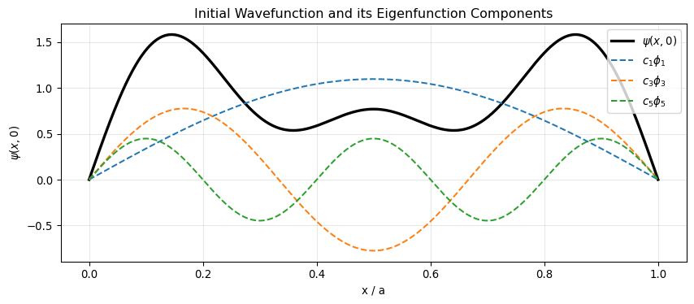

Code
import numpy as np
import matplotlib.pyplot as plt
from scipy.integrate import quad
# --- Parameters ---
hbar = 1.0
m = 1.0
a = 1.0
# Eigenfunctions
def phi(n, x, a=1.0):
return np.sqrt(2/a) * np.sin(n * np.pi * x / a)
# The wavefunction with unknown A
def psi0(x, A):
return (A / np.sqrt(a)) * np.sin(np.pi * x / a) \
+ np.sqrt(3 / (5*a)) * np.sin(3 * np.pi * x / a) \
+ (1 / np.sqrt(5*a)) * np.sin(5 * np.pi * x / a)
# Numerical normalization integral
def norm_integral(A):
result, _ = quad(lambda x: psi0(x, A)**2, 0, a)
return result
A_analytical = np.sqrt(6/5)
norm_check = norm_integral(A_analytical)
print(f"Analytical A = sqrt(6/5) = {A_analytical:.6f}")
print(f"Normalization check: integral |psi|^2 dx = {norm_check:.8f} (should be 1.0)")
# Extract coefficients
c1 = A_analytical / np.sqrt(2)
c3 = np.sqrt(3/10)
c5 = 1 / np.sqrt(10)
print(f"\nCoefficients: c1 = {c1:.6f}, c3 = {c3:.6f}, c5 = {c5:.6f}")
print(f"Sum of |cn|^2 = {c1**2 + c3**2 + c5**2:.8f} (should be 1.0)")
# --- Plot psi(x,0) and the three components ---
x = np.linspace(0, a, 500)
fig, ax = plt.subplots(figsize=(9, 4))
ax.plot(x, psi0(x, A_analytical), 'k-', lw=2.5, label=r'$\psi(x,0)$')
ax.plot(x, c1 * phi(1, x), '--', lw=1.5, label=r'$c_1\phi_1$')
ax.plot(x, c3 * phi(3, x), '--', lw=1.5, label=r'$c_3\phi_3$')
ax.plot(x, c5 * phi(5, x), '--', lw=1.5, label=r'$c_5\phi_5$')
ax.set_xlabel('x / a')
ax.set_ylabel(r'$\psi(x,0)$')
ax.set_title('Initial Wavefunction and its Eigenfunction Components')
ax.legend()
ax.grid(alpha=0.3)
plt.tight_layout()
plt.show()Analytical A = sqrt(6/5) = 1.095445
Normalization check: integral |psi|^2 dx = 1.00000000 (should be 1.0)
Coefficients: c1 = 0.774597, c3 = 0.547723, c5 = 0.316228
Sum of |cn|^2 = 1.00000000 (should be 1.0)